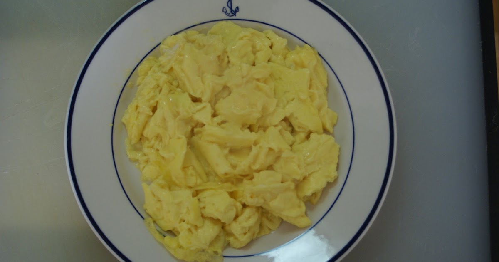

Home
Scrambled Eggs

Ingredients
- 2 to 6 eggs, depending on your appetite.
- Salt and pepper, to taste.
- A knob of butter.
- (Optional) A bit of milk.
Steps
- Heat the pan to low-medium heat, and add the butter.
- Beat together the eggs with the seasonings, along with milk if you wish.
- Pour eggs into the pan, mixing regularly until solidified.
- After the eggs are cooked through, remove from pan onto your plate
- Enjoy!
Note: The lower the heat and the longer it takes for the eggs to cook through, the better! Eggs cooked on too high a heat have an unpleasant texture.